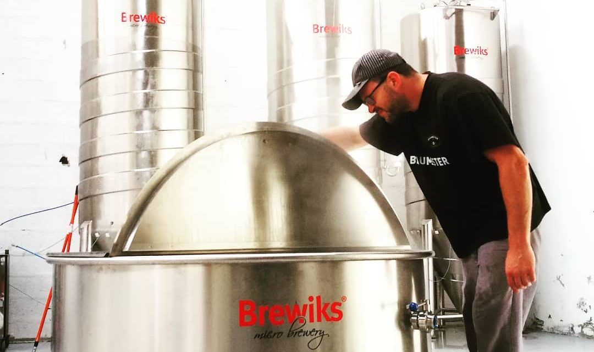
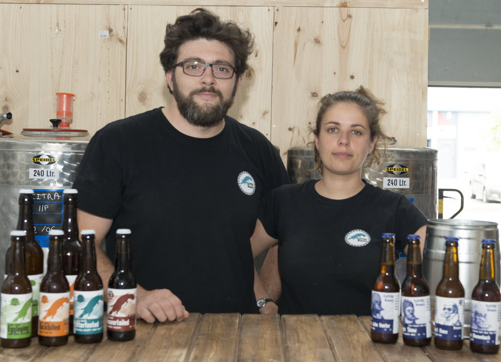

CONCEPT
Venez déguster les créations de Ludovic Ciléo.
Toutes nos bières sont brassées sur place dans l’ancienne cuisine réaménagée en micro-brasserie ! 6 fois par semaine Ludovic brasse 1 à 7 bières différentes, certaines sont récurentes, d’autres éphémères ! Basseur par passion, nous ne cessons d’innover dans la fabrication de la bière, l’exigence et la créativité sont au service de nos bières.
CONTACT
Pour plus de détails, n’hésitez pas à contacter votre brasserie artisanale de bière lyonnaise.